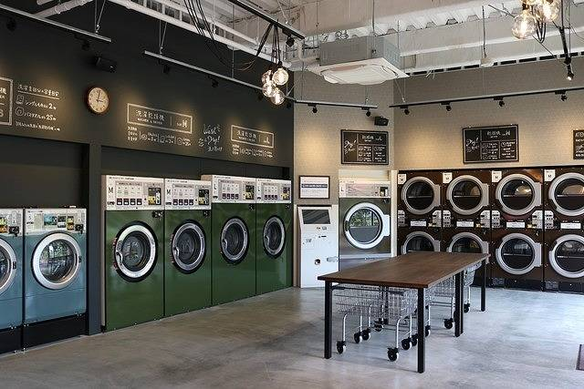
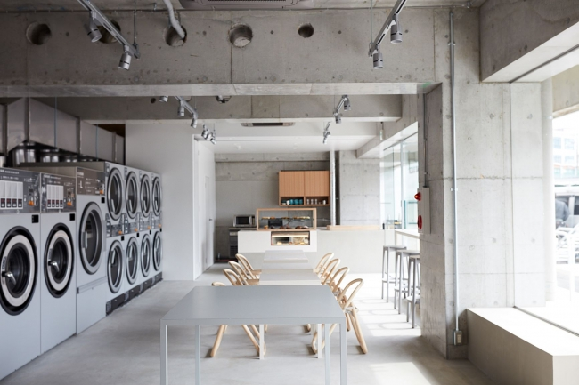

店舗案内
- ホーム
- 店舗案内
- 洗濯機
- 10Kg 2台 料金 400円
- 洗濯乾燥機
- 17Kg/10Kg 3台 料金 洗濯乾燥標準900円 洗濯乾燥少量700円 洗濯のみ800円 乾燥のみ100円10分 27Kg/16Kg 2台 料金 洗濯乾燥標準1300円 洗濯乾燥少量1100円 洗濯のみ1000円 乾燥のみ100円8分
- 乾燥機
- 25Kg 1台 料金 100円 8分 14Kg2×4台 料金 100円10分
- 営業時間
- 6:30~24:00
- カフェの営業時間
- 11:00~20:00
- 所在地
- 〒162-0846 埼玉県越谷市三津町21-13
- アクセス
- 新越谷駅から徒歩1分
- 洗濯機
- 10Kg 2台 料金 400円
- 洗濯乾燥機
- 17Kg/10Kg 2台 料金 洗濯乾燥標準900円 洗濯乾燥少量700円 洗濯のみ800円 乾燥のみ100円10分 27Kg/16Kg 2台 料金 洗濯乾燥標準1300円 プレミアム布団洗濯コース1700円 洗濯のみ1000円 乾燥のみ100円8分
- 乾燥機
- 25Kg 1台 料金 100円 8分 14Kg2×4台 料金 100円10分
- 営業時間
- 24時間
- 所在地
- 〒162-0846 埼玉県越谷市新立町23-53
- アクセス
- 新立バス停から徒歩6分
- 洗濯乾燥機
- 17Kg/10Kg 3台 料金 洗濯乾燥標準900円 洗濯乾燥少量700円 洗濯のみ800円 乾燥のみ100円10分 27Kg/16Kg 2台 料金 洗濯乾燥標準1300円 洗濯乾燥少量1100円 洗濯のみ1000円 乾燥のみ100円8分
- 乾燥機
- 27Kg 2台 料金 100円 7分 20Kg2× 2台 料金 100円8分 16Kg2× 3台 料金 100円10分
- スニーカーランドリー
- 洗濯200円 乾燥100円20分
- 営業時間
- 24時間営業
- 所在地
- 〒162-0846 埼玉県浦和市四宮町251-133
- アクセス
- 北浦和駅から徒歩9分
- 洗濯機
- 10Kg 2台 料金 400円
- 洗濯乾燥機
- 17Kg/10Kg 2台 料金 洗濯乾燥標準900円 洗濯乾燥少量700円 洗濯のみ800円 乾燥のみ100円10分
- 乾燥機
- 25Kg 1台 料金 100円 8分 14Kg2×4台 料金 100円10分
- 営業時間
- 24時間
- カフェの営業時間
- 11:00~20:00
- 所在地
- 〒162-0846 埼玉県さいたま市大宮区25531-133
- アクセス
- さいたま新都心駅から徒歩4分
越谷店

新立店
四宮店
